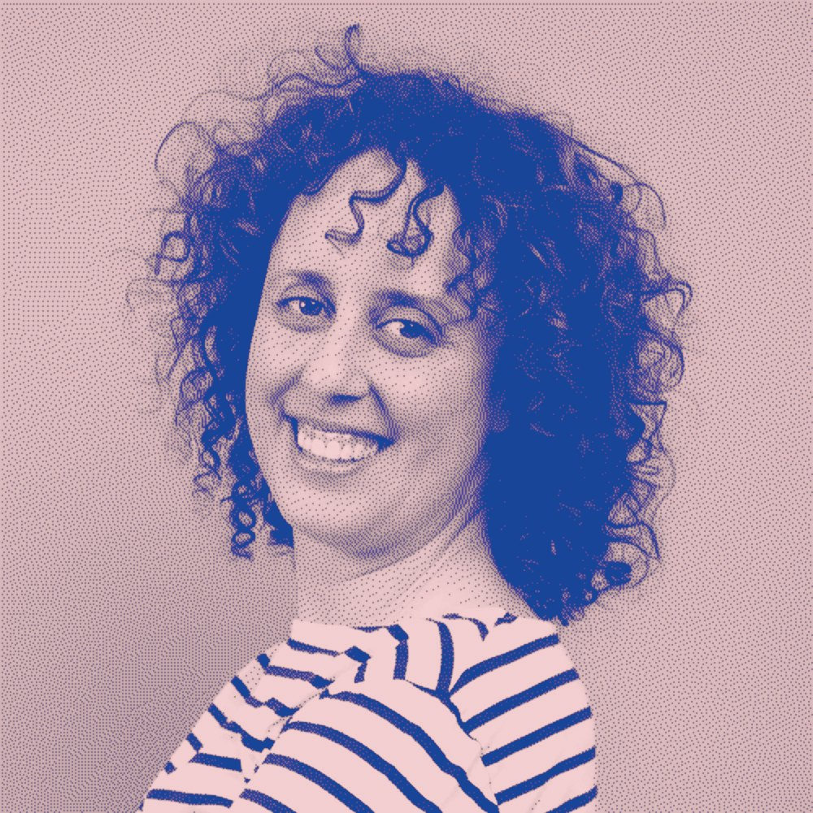
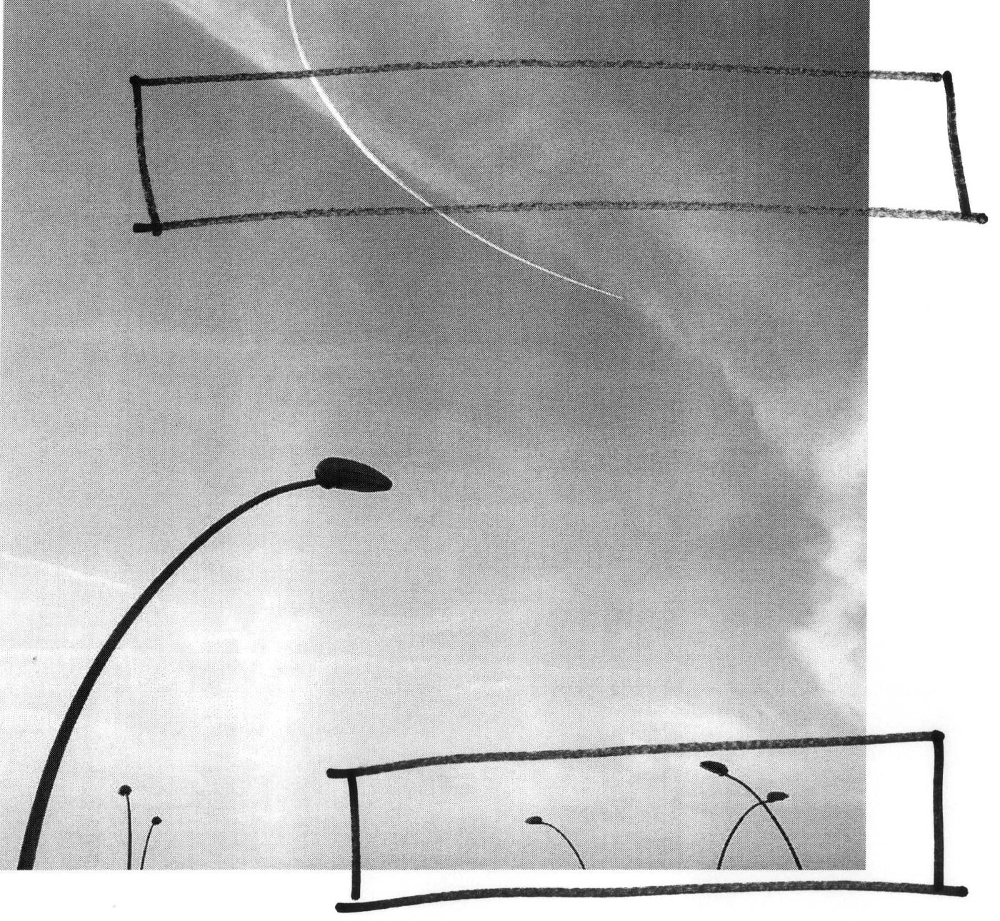
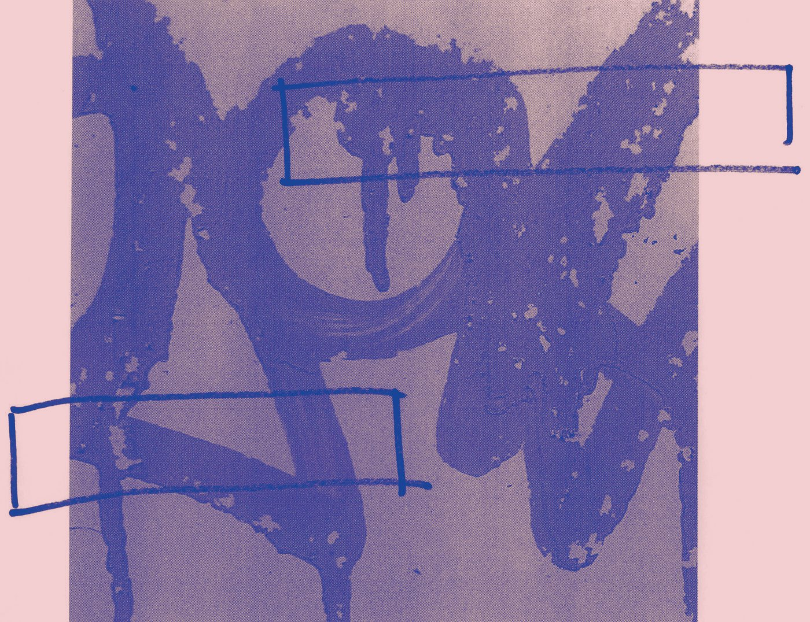
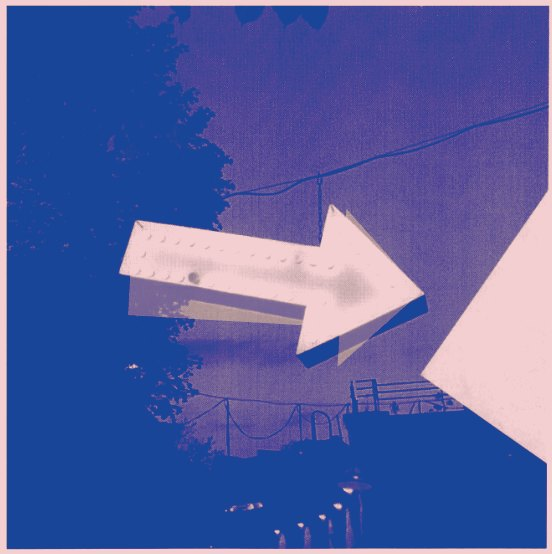

אני קרן, מעצבת מוצר בכירה ובוגרת בצלאל. אחרי שנים של עבודה על מוצרים דיגיטליים, אני רוצה לחזור לרגע שבו עיצוב מתחיל: דף ריק, מישהו שעוד מחפש את השפה שלו, ותיק עבודות שעוד אין לו צורה. שם אני רוצה להיות, כמלווה.


שני תחומים, שני תיקים, שתי ועדות. אני יודעת מה זה לבנות תיק מאפס, להתלבט בין תחומים ולעמוד מול ועדה.
הפרויקט הגדול שלי:
עיצוב ה־Agent של Imagen Intelligent Studio,
אפליקציה לצלמים מקצועיים.
אני חונכת את המעצבים הצעירים בצוות, ושותפה מרכזית בראיונות לגיוס מעצבים.
לפרויקט ←